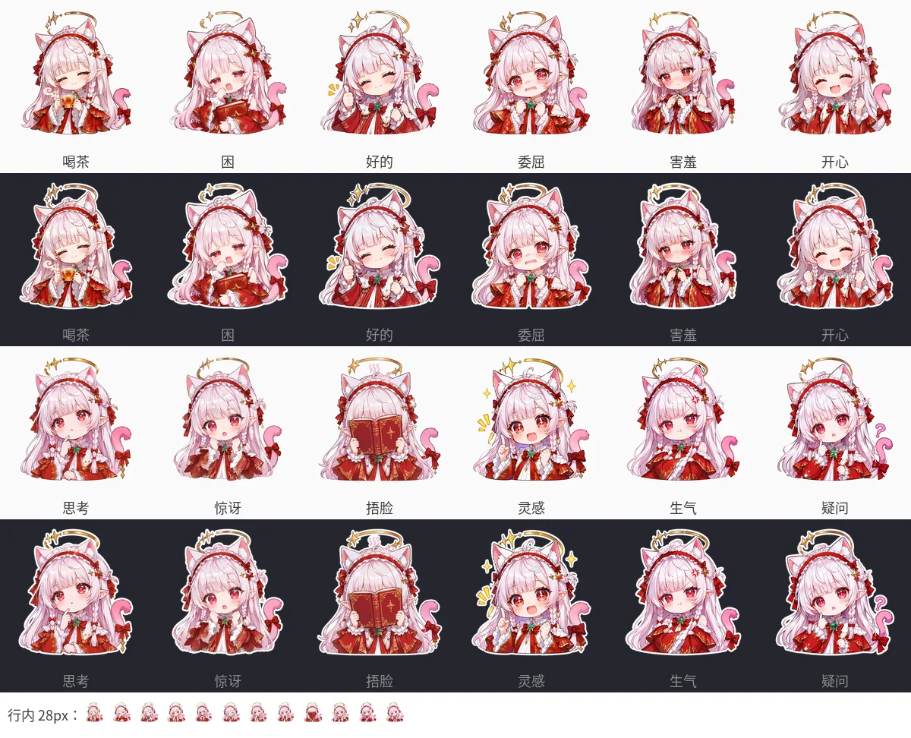
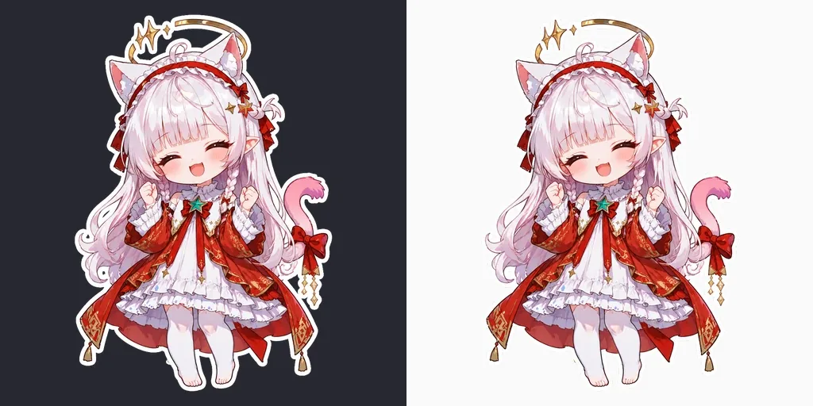

第 1 轮：星璃默认表情包
用 image-gen（gpt-image）以定稿母版为参考出了 12 张，透明底、512×512 WebP，每张约 30 到 60 KB。生成一共发了 14 次请求（2 张定画风的样图、12 张正式的）。
构图要不要再收近一点重出？
推荐重出（再发 12 次请求）：大图（约 120 像素）里人物一致、表情分得清；但句子里的行内小图只有约 28 像素，最下面一行可以看到 12 张几乎一样：半身加铺开的长发，脸只占画面的四分之一。改成只画头和手、脸占画面一半以上，表情再夸张一些（生气画青筋与鼓脸、灵感画大星星这类符号），小图才认得出。

收近到头和手、重出
小图认得出；大图里看不到衣服的全貌
就用这一批
大图好看，小图靠悬停提示认
全身

定画风时的样图；小图更认不出
图上的白边留着吗？
推荐留着：这道白边是画在图片里的（贴纸常见的模切边），不是界面画的；t08 定的“不用白边”说的是设置页别给每张图外面再描一圈。留着白边，暗色背景上人物的红衣服与深色底分得开（上图第二、四行）。
留着图里的白边
不要白边，重出
表情清单要增减或改名吗？
现在 12 个，名字就是写法里的名字：开心 害羞 捂脸 思考 灵感 疑问 好的 困 委屈 生气 惊讶 喝茶。前几个取自品牌设定里 <neurobook-mood> 的状态（思考、灵感、疑问、害羞、捂脸、困），其余是聊天常用的。重出时可以一起改，比如加“晚安”“加油”“比心”“谢谢”。不填就按这 12 个。
怎么默认带给用户？
推荐 A 内置：现在的 Spec 写明第一版只有插件与用户两种来源，没有内置表情包。Skill 已经有“内置”来源，照它给表情包也加一个：图随应用分发，id 是 builtin.lyra，写法照常是 :lyra/开心:；在设置里和插件的包一样只读，想改就“复制到我的”；内置的主创 Profile 默认能用它（提示词里列出）。应用升级时跟着更新，用户删不掉也改不坏。
A 内置来源
要给表情目录加 builtin 来源（Spec 与目录各改一处），设置页多一组“内置”
B 第一次启动复制到 user://stickers/lyra/
用户能直接改、能删；删了不再复制回来；应用升级时旧用户拿不到新图
C 只给一个 zip
不改应用；要用的人在设置里“导入 zip”